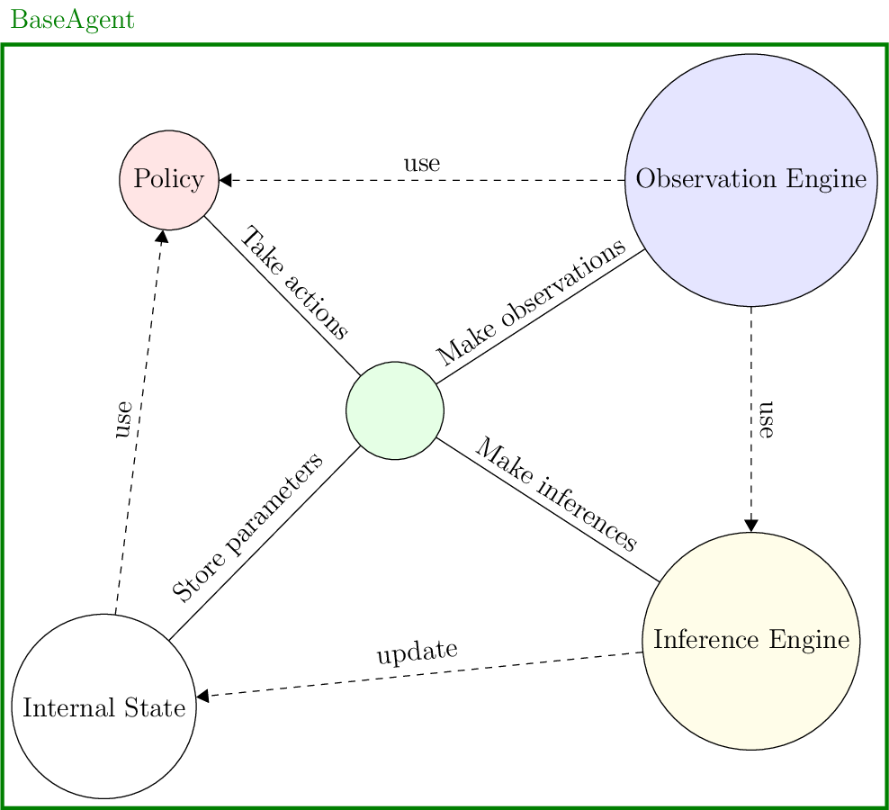

Quick Start
Installation
CoopIHC is currently available on PyPI. You can install the package using pip with the following command:
python3 -m pip install coopihc
You can also build directly from the github repository to get the latest version. To do so, install poetry, and run
poetry install
from within the folder. This will install CoopIHC in editable mode (basically equivalent to python3 -m pip install -e .), together with all its dependencies. You might need to download and install CoopIHC-Zoo as well for this to work.
Interaction Model
CoopIHC builds on a sequential two agent decision-making model. You should read through the model to get a grasp of what each component does.
High-level view of CoopIHC code
At a high level, your CoopIHC code will usually look like this
1# Define a task
2example_task = ExampleTask()
3# Define a user
4example_user = ExampleUser()
5# Define an assistant
6example_assistant = ExampleAssistant()
7# Bundle them together
8bundle = Bundle(task=example_task, user=example_user, assistant=example_assistant)
9# Reset the bundle (i.e. initialize it to a random or prescribed states)
10bundle.reset(
11 go_to=1
12) # Reset in a state where the user has already produced an observation and made an inference.
13
14# Step through the bundle (i.e. play full rounds)
15while 1:
16 state, rewards, is_done = bundle.step(user_action=1, assistant_action=None)
17 # Do something with the state or the rewards
18 if is_done:
19 break
You will usually define a task, a user, an assistant, and bundle them together. You can then play several rounds of interaction until the game ends, and based on the collected data, you can do something.
Quick-States
The interaction model uses the concept of states, a collection of useful variables for the system. In CoopIHC you define them via a State object. The states are containers that hold elements called StateElement. A StateElement is a collection of a value and a Space, its associated domain. A State may be nested and contain another State.
In the example below, a super-state is defined using a State. This super-state is itself defined by two substates. Each of those two substates holds a StateElement, defined here via shortcuts such as array_element.
1
2state = State()
3
4substate = State()
5substate["x1"] = discrete_array_element(init=1, low=1, high=3)
6substate["x3"] = array_element(
7 init=1.5 * numpy.ones((2, 2)), low=numpy.ones((2, 2)), high=2 * numpy.ones((2, 2))
8)
9
10substate2 = State()
11substate2["y1"] = discrete_array_element(init=1, low=1, high=3)
12
13state["sub1"] = substate
14state["sub2"] = substate2
15
:py:class:States<coopihc.base.State> and :py:class:StateElementss<coopihc.base.StateElements> subclass respectively Python’s built-in dictionary and NumPy arrays types. Interacting with these objects should prove relatively familiar to most Python users. To find out more about this and for extra details, go to Space, StateElement and State.
Quick-Tasks
Tasks represent the agent’s environment. Usually in the CoopIHC context, the task will represent the part of an interface that the user can interact with and drive to a certain state.
Essentially, tasks are characterized by:
An internal state called the task
statewhich holds all the task’s information; for example, the state of the interface.A
on_user_action()method, which is a transition function that describes how the task state changes on receiving a user action.An
on_assistant_action()method, which is a transition function that describes how the task state changes based on the assistant action.
As an example, let’s define a simple task where the goal of the user is to drive the substate called ‘x’ to a value of 4. Both the user and the assistant can provide three actions: -1, +0 and +1. We define a task by inheriting from InteractionTask and redefining a few methods.
1class ExampleTask(InteractionTask):
2 """ExampleTask
3
4 An example algebraic task which a single task state 'x', which finishes when x = 4.
5
6 """
7
8 def __init__(self, *args, **kwargs):
9
10 # Call super().__init__() beofre anything else, which initializes some useful attributes, including a State (self.state) for the task
11
12 super().__init__(*args, **kwargs)
13
14 # Describe the state. Here it is a single item which takes value in [-4, -3, ..., 3, 4]. The StateElement has out_of_bounds_mode = clip, which means that values outside the range will automatically be clipped to fit the space.
15 self.state["x"] = discrete_array_element(
16 init=0, low=-1, high=4, out_of_bounds_mode="clip"
17 )
18
19 def reset(self, dic=None):
20 # Always start with state 'x' at 0
21 self.state["x"] = 0
22 return
23
24 def on_user_action(self, *args, **kwargs):
25 # Modify the state in place, adding the user action
26 is_done = False
27 # self.state["x"] = self.state["x"] + self.user_action
28 self.state["x"] += self.user_action
29
30 # Stopping condition, return is_done boolean floag
31 if self.state["x"] == 4:
32 is_done = True
33
34 reward = -1
35 return self.state, reward, is_done
36
37 def on_assistant_action(self, *args, **kwargs):
38 is_done = False
39 # Modify the state in place, adding the assistant action
40 self.state["x"] += self.assistant_action
41 # Stopping condition, return is_done boolean floag
42 if self.state["x"] == 4:
43 is_done = True
44
45 reward = -1
46 return self.state, reward, is_done
Some comments on the code snippet above:
The task state
'x'is defined in the__init__method. Remember to always callsuper()’s__init__before anything else to ensure all necessary variables internal to CoopIHC are set.The
resetmethod resets the task to an initial state, in this case'x'=0. You don’t have to define a reset method, in which case it will inherit it from :py:class:InteractionTask<coopihc.interactiontask.InteractionTask>, and the reset method will randomly pick values for each state.You have to define a user and assistant step function otherwise an error will be raised. Both of these are expected to return the triple (task state, reward, is_done).
A render method is available if you want to render the task online, see :py:class:InteractionTask<coopihc.interactiontask.InteractionTask>
Quick-Agents
Agents are defined by four components:
An internal state, which essentially gives memory to the agent;
An observation engine, which generates observations from the game state, giving the agent the ability to perceive;
An inference engine, with which the agent modifies its internal state, giving it the ability to learn;
A policy, used to take actions, giving the agent the ability to make decisions.

Fig. 1 Agent structure
You define a new agent by subclassing the BaseAgent class. As an example, we now create an agent which goes with the ExampleTask that we defined in Tasks. We make an agent with a 'goal' state to indicate the value for 'x' that it wants to achieve, and make its available actions \([-1,0,1]\). These actions are chosen via the ExamplePolicy (see Policies).
1class ExampleUser(BaseAgent):
2 """An Example of a User.
3
4 An agent that handles the ExamplePolicy, has a single 1d state, and has the default observation and inference engines.
5 See the documentation of the :py:mod:`BaseAgent <coopihc.agents.BaseAgent.BaseAgent>` class for more details.
6
7 :meta public:
8 """
9
10 def __init__(self, *args, **kwargs):
11
12 # Define an internal state with a 'goal' substate
13 state = State()
14 state["goal"] = discrete_array_element(init=4, low=-4, high=4)
15
16 # Define policy
17 action_state = State()
18 action_state["action"] = discrete_array_element(init=0, low=-1, high=1)
19 agent_policy = ExamplePolicy(action_state=action_state)
20
21 # Use default observation and inference engines
22 observation_engine = None
23 inference_engine = None
24
25 super().__init__(
26 "user",
27 *args,
28 agent_policy=agent_policy,
29 agent_observation_engine=observation_engine,
30 agent_inference_engine=inference_engine,
31 agent_state=state,
32 **kwargs
33 )
34
35 def reset(self, dic=None):
36 """reset
37
38 Override default behaviour of BaseAgent which would randomly sample new goal values on each reset. Here for purpose of demonstration we impose a goal = 4
39
40 :meta public:
41 """
42 self.state["goal"] = 4
Note
All 4 components default to their corresponding base implementation if not provided.
You can verify that the user model works as intended, by bundling it with the task. Since we haven’t provided an assistant yet, we slightly change the task very, redefining its on_assistant_action().
1
2
3class ExampleTaskWithoutAssistant(ExampleTask):
4 def on_assistant_action(self, *args, **kwargs):
5 return self.state, 0, False
6
7
8example_task = ExampleTaskWithoutAssistant()
9example_user = ExampleUser()
10bundle = Bundle(task=example_task, user=example_user)
11bundle.reset()
12
13while True:
14 state, rewards, is_done = bundle.step()
15 if is_done:
16 break
Quick-Policies
To define a policy, simply subclass :py:class:BasePolicy<coopihc.policy.BasePolicy> and redefine its sample() method. Below, we show how ExamplePolicy has been defined.
1class ExamplePolicy(BasePolicy):
2 """ExamplePolicy
3
4 A simple policy which assumes that the agent using it has a 'goal' state and that the task has an 'x' state. x is compared to the goal and appropriate action is taken to make sure x reaches the goal.
5
6
7 """
8
9 def __init____init__(self, *args, action_state=None, **kwargs):
10 super().__init__(*args, action_state=None, **kwargs)
11
12 @BasePolicy.default_value
13 def sample(self, agent_observation=None, agent_state=None):
14 """sample
15
16 Compares 'x' to goal and issues +-1 accordingly.
17
18 :return: action, reward
19 :rtype: tuple(`StateElement<coopihc.base.StateElement.StateElement>`, float)
20 """
21
22 if (
23 agent_observation["task_state"]["x"]
24 < agent_observation["user_state"]["goal"]
25 ):
26 _action_value = 1
27 elif (
28 agent_observation["task_state"]["x"]
29 > agent_observation["user_state"]["goal"]
30 ):
31 _action_value = -1
32 else:
33 _action_value = 0
34
35 return _action_value, 0
Note
Don’t forget to return a reward with the action.
Note
You can virtually put anything inside this function: that includes the output of a neural network, of a complex simulation process, and even the output of another bundle (see Modularity for an example.)
Quick-Observation Engines
States are rarely perfectly observable by agents:
the other agent’s internal states are usually unknown,
the task’s state may be partially observable; for example, a human observer may produce noisy observations,
an agent’s own internal state may be partially observable; for example, a human observer might have poor retention capabilities.
Furthermore, there might be a cost associated with making observations:
There can be a tradeoff between the time needed to produce an observation and its quality; for example, precise observations may be costly (in terms of time).
A human observer may enjoy making observations which are very different (according to some criterion) to the previous ones, in which case it would be rewarded for differing observations, satisfying its curiosity.
CoopIHC provides a generic object called an observation engine which specifies how an observation is created from the game state. To create a new observation engine, you can base it off an existing observation engine or subclass the BaseObservationEngine.
To create a new engine by subclassing the BaseObservationEngine class, you have to redefine the observe() method. You can virtually put anything inside this function: that includes the output of a neural network, of a complex simulation process, and even the output of another bundle (see Modularity for an example). Below, we show a basic example where we define an engine that only looks at a particular substate.
1class ExampleObservationEngine(BaseObservationEngine):
2 """ExampleObservationEngine
3
4 A simple example where the engine is only able to see a particular state (observable_state).
5
6 :param observable_state: only state that can be observed
7 :type observable_state: string
8 """
9
10 def __init__(self, observable_state, *args, **kwargs):
11 super().__init__(*args, **kwargs)
12 self.observable_state = observable_state
13
14 # @BaseObservationEngine.get_params
15 @BaseObservationEngine.default_value
16 def observe(self, game_state=None):
17 """observe
18
19 Select only state observable_state.
20
21 :param game_state: game state
22 :type game_state: `State<coopihc.base.State.State`
23 :return: (observation, obs reward)
24 :rtype: tuple(`State<coopihc.base.State.State`, float)
25 """
26 return (
27 State(**{self.observable_state: game_state[self.observable_state]}),
28 0,
29 )
Don’t forget to return a reward with the observation. The effect of this engine can be tested by plugging in a simple State:
1obs_engine = ExampleObservationEngine("substate1")
2# Game state before observation
3# >>> print(S)
4# ---------- ---------- - ---------
5# substate1 substate_x 0 Numeric()
6# substate_y 2 Numeric()
7# substate_2 substate_a 0 CatSet(3)
8# ---------- ---------- - ---------
9
10print(obs_engine.observe(game_state=S)[0])
11# Produced Observation
12# >>> print(obs_engine.observe(S)[0])
13# --------- ---------- - ----------
14# substate1 substate_x 0 Cont(1, 1)
15# substate_y 2 Discr(3)
16# --------- ---------- - ----------
Note
The signature observe(self, game_state=None) is expected. When called with game_state = None, the engine will fetch the agent’s observation. If the game state is actually passed, it will use the input state as basis to produce the observation. This is useful, for example, when testing your engine and you want to control the input.
Quick-Inference Engines
Agents should be able to learn (infer parameters from observed data) and to adapt (change policy parameters based on observed data). As in observation engines, there might be a cost associated with making inferences:
Making an inference can be time costly.
Inferring may be rewarding; for example, because it is enjoyable.
CoopIHC provides a generic object called inference engines to update internal states from observations. Although the name might suggest otherwise, these engines may use (any) other mechanisms than statistical inference that update the internal state. To create a new inference engine, you can base it off an existing engine or subclass the BaseInferenceEngine.
Essentially, the BaseInferenceEngine provides a simple first-in-first-out (FIFO) buffer that stores observations. When subclassing BaseInferenceEngine, you simply have to redefine the infer method (by default, no inference is produced). An example is provided below, where the engine stores the last 5 observations.
1class ExampleInferenceEngine(BaseInferenceEngine):
2 """ExampleInferenceEngine
3
4 Example class
5
6 """
7
8 def __init__(self, *args, **kwargs):
9 super().__init__(*args, **kwargs)
10
11 def infer(self, agent_observation=None):
12 """infer
13
14 Do nothing. Same behavior as parent ``BaseInferenceEngine``
15
16 :return: (new internal state, reward)
17 :rtype: tuple(:py:class:`State<coopihc.base.State.State>`, float)
18 """
19 if agent_observation is None:
20 agent_state = self.state
21
22 reward = 0
23 # Do something
24 # agent_state = ..
25 # reward = ...
26
27 return agent_state, reward
28
29
30ExampleInferenceEngine(buffer_depth=5)
Quick-Bundles
Bundles are the objects that compose the three main components (task, user and assistant) into a game. It forms the joint state, collects the rewards and ensure synchronous sequential sequences of observations, inferences and actions of the two agents.

They are useful because they allow you to orchestrate the interaction how you want it.
In most cases, there is no need to define a new Bundle, and you can straightaway use the standard existing Bundle. For example, you can create a bundle and interact with it like so:
1
2
3class ExampleTaskWithoutAssistant(ExampleTask):
4 def on_assistant_action(self, *args, **kwargs):
5 return self.state, 0, False
6
7
8example_task = ExampleTaskWithoutAssistant()
9example_user = ExampleUser()
10bundle = Bundle(task=example_task, user=example_user)
11bundle.reset()
12
13while True:
14 state, rewards, is_done = bundle.step()
15 if is_done:
16 break
Note
Bundles also handle joint rendering as well as other practical things. More details can be found on Bundle’s reference page.
An overview of CoopIHC
Several implementations of user models, tasks and assistants exist in CoopIHC’s repository CoopIHC-Zoo
Several worked-out examples are given in this documentation. Those should give you a good idea about what can be done with CoopIHC.